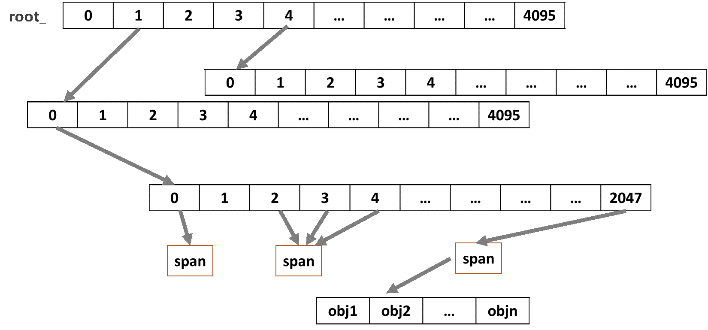

C++应用程序内存泄露调查篇II
飞天很多模块都是使用C++开发的，而C++相对于其他编程语言的一大好处是内存使用效率比较高，程序员可以灵活控制内存的申请、释放。但如果用错的话，随之而来的是很多不易调查的程序错误，比如内存泄露、对象double free、访问地址越界等。
在盘古开发过程中，我也曾经多次遭遇过内存泄露的问题。为了快速定位原因，我曾经强化了tcmalloc内存分配器，加入了内存跟踪功能，在怀疑应用程序有内存泄露问题后，则链接我修改过的tcmalloc库复现，只要复现了，内存泄露问题迎刃而解，已经在多个项目中发挥作用，详情见之前发过的ATA文章应用程序内存使用跟踪之内存泄露调查篇。但这种方法存在一个问题，即需要复现才能定位原因，这在线下测试的时候还比较好说，因为测试环境和测试方法是已知的，基本都可以复现，但如果线上发现内存泄露，因为触发场景不可知，线下不知道如何复现，这就很难快速定位泄漏点了。而且线上发现内存泄露之后，风险远远大于线下测试场景，我们急需一套切实可行的快速定位内存泄露的方法。
tcmalloc是一个高效的内存管理器，实测性能显著高于glibc的malloc。当前飞天的thirdparty组件提供了tcmalloc库，而且飞天的很多应用都已经默认链接了tcmalloc库，通过分析tcmalloc的内存管理模型后发现，对于链接了tcmalloc库的应用程序如果发现内存泄露的话，大部分情况下，我们都可以通过分析定位内存泄露点。
首先，我先简单介绍一下tcmalloc的内存管理方式，tcmalloc中通过以下几个内存管理模块管理应用程序内存：
一个PageHeap型全局静态变量tcmalloc::Static::pageheap_是内存管理的核心数据结构。其中tcmalloc::Static::pageheap_.pagemap_通过Radix Tree数据结构管理内存分配页（page）到Span的映射关系：
当前64位Linux应用程序只用了地址的低48bits，高16bits没有使用。所以在tcmalloc内存分配页8K（2^13）的配置下，总共有2^35页(48-13)，tcmalloc将35bits分为12，12，11三级Radix Tree来管理，如下图所示。

其中叶节点Span保存了一个或多个Page的meta信息，包含当前Span的起始PageId及Page的数量，当前Span状态、Span中已经释放的内存块等信息。一个Span中包含多个同样大小的内存块，供应用程序内存申请。ThreadCache用于用户内存块的线程缓存，每个做过内存申请/释放操作的线程都有一个ThreadCache对象，当线程需要申请内存块时，优先从自己的ThreadCache中获取，释放内存块时，也优先保存在自己的ThreadCache中。
一个CentralCache型全局静态变量tcmalloc::Static::central_cache_用于维护进程中没被应用程序使用的内存块，在内存申请时，如果ThreadCache没有可用内存，则转入CentralCache申请；在内存释放时，如果ThreadCache长度或容量超限，则调用ReleaseToCentralCache批量转入CentralCache。
如果一个Span中的所有内存都被应用程序释放的话，则回收到tcmalloc::Static::pageheap_中。其中不超过1M的Span，会根据内存大小暂存在tcmalloc::Static::pageheap_ ->free_的不同单元中，超过1M的连续内存页，则会暂存在tcmalloc::Static::pageheap_->large_对象链表中。以待将来再次申请时使用。
通过分析如上的内存管理结果，我们可以得知：
应用程序申请的内存块 = Span记录的使用中内存块 – Span Meta中记录的释放内存块 – ThreadCache中缓存内存块 – CentralCache中缓存内存块
应用程序申请的内存块在tcmalloc中是根据块大小分类（class）的，所以我们可以统计出每种class内存使用量。也就是说，如果发生内存泄露，我们可以初步定位泄露的内存是属于哪个class的。那么有这个信息以后还能干什么呢？对于常见的内存泄露问题来说，泄漏点都是相对固定的，泄露内存也因为内存使用方式的问题会有一个固定的pattern，我们通过tcmalloc的内存管理方式可以找到所有泄露class内存块的地址。地址有了，那么我们就可以统计这些内存块是否有一些固定的pattern，而如果找到了某个pattern，这也就是泄露的pattern，反过来说，含有泄露pattern的地址就是泄露的内存地址。
在大部分情况下，有了泄露pattern，我们就知道泄露的数据块的类型，那么根据源代码找相应类型数据的申请/释放流程，就能发现内存泄露点了，问题基本可以定位了。但某些极端情况下，我们还是不能直接确定内存pattern是什么意思，从哪里申请的，我们刚才分析的内存地址就有用了。我们可以通过全内存搜索这个地址，看那些数据结果中含有这个地址，如果我们知道了引用泄露数据块的对象类型，也间接知道了泄露内存的类型，从而可以发现内存泄露点。
分析完了，看看怎么做吧，我已经把分析方法尽量工具化，相应工具在附件中，最新版可以从http://10.101.194.223/tcmalloc/gdb710.tgz下载，gdb710增加了内存分析的几个小工具。
我稍微修改了一下之前文章的内存泄露演示程序
#include <stdio.h>
#include <string>
#include <stdlib.h>
#include <unistd.h>
class container
{
public:
container(std::string* data) : mData(data) {}
virtual ~container() {}
private:
std::string* mData;
};
void* demo_x(void*)
{
std::string* a = new std::string;
std::string* x = new std::string(1024, 0);
delete x;
delete a;
return NULL;
}
int demo_y(int idx)
{
std::string* a = new std::string;
std::string* x = new std::string(1024, idx % 3);
if (idx % 3 == 0) delete x;
else new container(x);
return a->size() + idx;
}
int main(int argc, char *argv[])
{
int ar[1000000];
int rt = 0;
demo_x(NULL);
pthread_t th1;
(void) pthread_create(&th1, NULL, demo_x, NULL);
for(size_t idx = 0; idx < 1 * 1024 * 1024; ++idx)
rt += demo_y(idx);
(void) pthread_join(th1, NULL);
abort(); // just use for obtain memory layout
return rt;
}
使用g++编译，然后运行：
$g++ memleak_demo.cpp -o memleak_demo -lpthread -g
$LD_PRELOAD=/path/to/thirdparty/gcc-default/lib/libtcmalloc.so ./memleak_demo
Aborted (core dumped)
下载分析工具并进行简单分析：
$wget http://10.101.194.223/tcmalloc/gdb710.tgz #下载分析工具
$tar xzf gdb710.tgz #解压缩
$./gdb/gdb memleak_demo /apsara/tubo//corefile/core-memleak_demo-8905-1470621953-rs3a01031.et2sqa
(gdb) memspan #统计应用程序使用中内存的layout，对于大内存的core可能很慢，需要等待
span scan progress 100%
Memory used distribution by normal classSize of tcmalloc
class: 1 classSize: 8 spanCnt: 1707 LeakSpace: 13983744
class: 2 classSize: 16 spanCnt: 1366 LeakSpace: 11190272
class: 3 classSize: 32 spanCnt: 1 LeakSpace: 8192
class: 4 classSize: 48 spanCnt: 1 LeakSpace: 8192
class: 6 classSize: 80 spanCnt: 1 LeakSpace: 8192
class: 18 classSize: 288 spanCnt: 1 LeakSpace: 8192
class: 19 classSize: 320 spanCnt: 1 LeakSpace: 8192
class: 32 classSize: 1152 spanCnt: 49933 LeakSpace: 818102272
Memory used distribution by huge classSize of tcmalloc
从上面的统计可以看到，大部分应用程序内存都是从class id 32申请的，对应的每次内存申请是1152个字节。下一步可以导出所有的class id等于32的内存块地址
(gdb) memspan 32 /dev/shm/memleak.summary
span scan progress 100%
Memory used distribution by normal classSize of tcmalloc
class: 1 classSize: 8 spanCnt: 1707 LeakSpace: 13983744
class: 2 classSize: 16 spanCnt: 1366 LeakSpace: 11190272
class: 3 classSize: 32 spanCnt: 1 LeakSpace: 8192
class: 4 classSize: 48 spanCnt: 1 LeakSpace: 8192
class: 6 classSize: 80 spanCnt: 1 LeakSpace: 8192
class: 18 classSize: 288 spanCnt: 1 LeakSpace: 8192
class: 19 classSize: 320 spanCnt: 1 LeakSpace: 8192
class: 32 classSize: 1152 spanCnt: 49933 LeakSpace: 818102272
Memory used distribution by huge classSize of tcmalloc
Output all 49933 span for class 32 into outfile /dev/shm/memleak.summary
Output all 699062 address for class 32 into outfile /dev/shm/memleak.summary
用awk把使用中的地址提取出来：
$cat /dev/shm/memleak.summary |awk '$2 == "InUse"{print $1}' > /dev/shm/memleak.addr
上面分析内存地址的时候已经很慢了，如果在gdb里面再分析pattern简直是不能忍的慢，所以我只能用一个外挂程序完成内存pattern的分析了：
直接敲入./gdb/mempattern可以获取简单的用法信息，首先我们要先把coredump的信息dump到文件：
$./gdb/mempattern dump /apsarapangu/disk9/shuqi/memleak_dump memleak_demo /apsara/tubo//corefile/core-memleak_demo-23728-1470625564-rs3a01031.et2sqa
然后分析dump出来的内存数据：
$./gdb/mempattern analyze /apsarapangu/disk9/shuqi/memleak_dump /dev/shm/memleak.addr 1152
0000000000000400 0000000000000400 0000000000000400 699050 699050
0000000000000400 0000000000000400 0000000000000400 699050 699050
0000000000000000 0000000000000000 0000000000000000 699050 699050
0101010101010101 0202020202020202 0101010101010101 349525 699050
0101010101010101 0202020202020202 0101010101010101 349525 699050
0101010101010101 0202020202020202 0101010101010101 349525 699050
0101010101010101 0202020202020202 0101010101010101 349525 699050
0101010101010101 0202020202020202 0101010101010101 349525 699050
0101010101010101 0202020202020202 0101010101010101 349525 699050
0101010101010101 0202020202020202 0101010101010101 349525 699050
0101010101010101 0202020202020202 0101010101010101 349525 699050
0101010101010101 0202020202020202 0101010101010101 349525 699050
/dev/shm/memleak.addr中总共包含699050个条目，其中前24个字节的内存结构都一样，常识告诉我们这个是一个字符串，长度是0x400=1024个字节。其中一半的内存是0x01填充的，对于这个小程序看代码就知道泄露点了。但是如果复杂一些的程序我们看不出来怎么办呢？
我们可以先过滤掉那些没有pattern的地址：
$./gdb/mempattern analyze /apsarapangu/disk9/shuqi/memleak_dump /dev/shm/memleak.addr 1152 0,0x0000000000000400 2,0 > result
$cat result |grep -A 2 "Leak Address after pattern filter"
Leak Address after pattern filter
0x00000071a000, 0x00000071a480, 0x00000071a900, 0x00000071ad80
0x00000071b200, 0x00000071b680, 0x00000071bb00, 0x00000071bf80
0x00000071c400, 0x00000071c880, 0x00000071cd00, 0x00000071d180
0x00000071d600, 0x00000071da80, 0x000000720000, 0x000000720480
随便找一个地址看一下：
(gdb) x/10xg 0x00000071a000
0x71a000: 0x0000000000000400 0x0000000000000400
0x71a010: 0x0000000000000000 0x0101010101010101
0x71a020: 0x0101010101010101 0x0101010101010101
0x71a030: 0x0101010101010101 0x0101010101010101
0x71a040: 0x0101010101010101 0x0101010101010101
因为是一个string类型的地址，所以如果别的数据结构要引用这块地址的话，应该指到了0x71a018，所以搜索0x71a018。
(gdb) meminfo search 0x71a018
0x70e010,
找到了0x70e010，根据之前对tcmalloc内存管理方式的介绍，我们知道可以拿到任何一块内存的meta信息，所以我扩展了gdb增加了tcaddr命令，显示内存块的信息，顺便说一下，这个命令查core也很有用：
(gdb) tcaddr 0x70e010
(('tcmalloc::Span'*)0x602060)
class: 1
size: 8
start: 0x70e010
end: 0x70e018
这块内存只占8字节，分析了一下，没找到什么线索，继续找，看有没有对象指到0x70e010
(gdb) meminfo search 0x70e010
0x710028,
(gdb) tcaddr 0x710028
(('tcmalloc::Span'*)0x602090)
class: 2
size: 16
start: 0x710020
end: 0x710030
这次找到了0x710028，分析一下，0x710020对应的数据结构有虚表
(gdb) x/2xg 0x710020
0x710020: 0x0000000000400f70 0x000000000070e010
(gdb) x/xg 0x0000000000400f70
0x400f70 <_ZTV9container+16>: 0x0000000000400d80
(gdb) demangle _ZTV9container
vtable for container
根据虚表我们知道数据类型是container。所以在对code来看，就是containder的mData对象对应的内存忘记析构了，再找找，container的mData成员是在创建container对象的时候生成的，x也是在demo_y中创建的对象，在找找发现问题了！，某些场景下忘记析构x了，不对，好像container也忘记析构了。是的，其实上面的class2（container所在tcmalloc class）也是有内存泄露的，如果按上面的流程分析class 2可能就直接定位问题了，可惜绕了一大圈走了一条弯路，好了，不管怎么样，总算调查清楚问题了。
还有最悲惨的一种情况，找遍内存都不知道pattern从哪里来的，这种情况可能只有线下测试了。我们可以用应用程序内存使用跟踪之内存泄露调查篇中的方法，线下把测试跑起来，这时我们不需要复现内存泄露，只需要在跑一段时间后gcore一下，判断线下测试有没有发现同样pattern的内存块，如果有的话，因为带了内存跟踪补丁，所以知道任何一块内存的来源 ，间接的我们也就知道了线上内存泄露的原因了。
总之，如果应用程序使用了tcmalloc，那我们调查内存泄露问题永远不是个问题了。

顶！d=====(￣▽￣*)b
看了觉得很赞，以前写过一个windows的内存泄露的工具，遇到内存泄露，hook到内存分配api，在进入api之前把参数传到我的处理函数把调用栈和分配大小记录下来，保持原环境运行一段时间后再看记录的文件，但是这样侵入性非常大，一不小心程序就跪了，所以一般是把完整进程dump出来弄，楼主直接修改原api似乎更稳妥更靠谱，以前没想到，很赞
赞
看似直白的方法，却需要深厚的背景知识，佩服